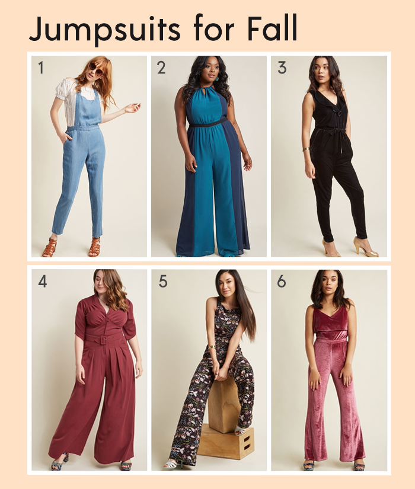
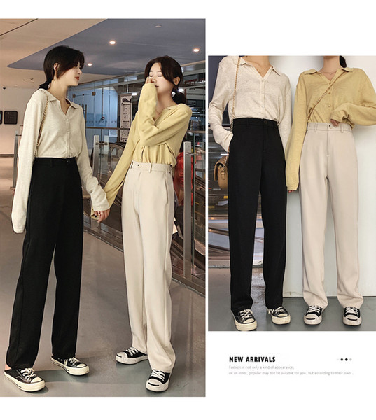
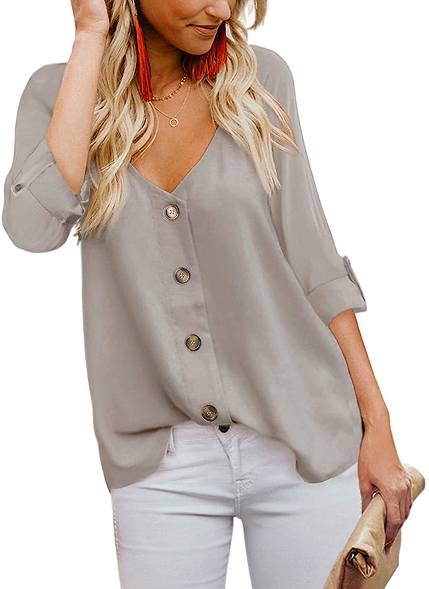
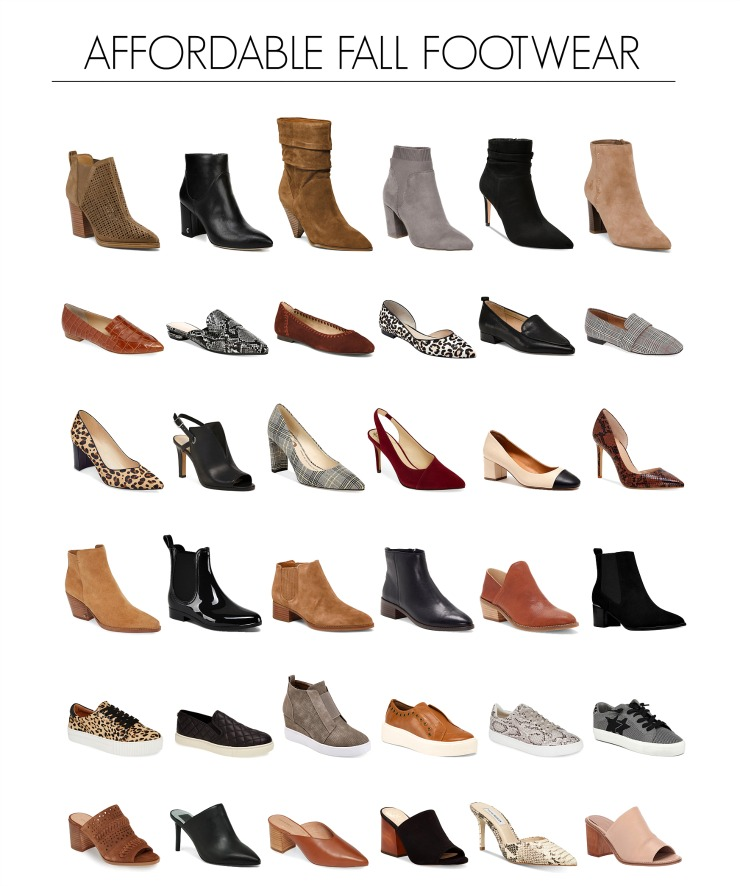

Home Summer Winter Fall Spring About Me!
Good ol' Fall. I love fall because of the beautiful array of warm and toasty colors. This is the season of scarves, sweaters, and trench coats. So, what are you waiting for? Time to represent the beauty of nature through our clothes!
For dresses, a lot of buttons are trending right now. Pencilled dresses and and lacy ones look good. Colors such as black, maroon, dark orange, and brown reflect the pretty fall leaves.
A long sleeve romper or a short sleeve jumpsuit looks great, maybe a black one with gold accents.
Cargo pants and jeans are great! Paper bag pants look super trendy. Pencil skirts and long ones look good. My favorites in the fall time are just some good ol' jeans
Cardigans, Sweaters, Knitwear and wrap tops look amazing!

Finally, SHOES the statement piece of all outfits. You honestly can't go wrong with these! Rainbows,or UGGS are my faves for fall, but sandals are pretty great too.
